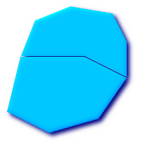
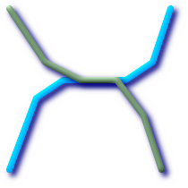

Table of Contents
The GIS objects supported by PostGIS are a superset of the "Simple Features" defined by the OpenGIS Consortium (OGC). As of version 0.9, PostGIS supports all the objects and functions specified in the OGC "Simple Features for SQL" specification.
PostGIS extends the standard with support for 3DZ,3DM and 4D coordinates.
The OpenGIS specification defines two standard ways of expressing spatial objects: the Well-Known Text (WKT) form and the Well-Known Binary (WKB) form. Both WKT and WKB include information about the type of the object and the coordinates which form the object.
Examples of the text representations (WKT) of the spatial objects of the features are as follows:
POINT(0 0)
LINESTRING(0 0,1 1,1 2)
POLYGON((0 0,4 0,4 4,0 4,0 0),(1 1, 2 1, 2 2, 1 2,1 1))
MULTIPOINT(0 0,1 2)
MULTILINESTRING((0 0,1 1,1 2),(2 3,3 2,5 4))
MULTIPOLYGON(((0 0,4 0,4 4,0 4,0 0),(1 1,2 1,2 2,1 2,1 1)), ((-1 -1,-1 -2,-2 -2,-2 -1,-1 -1)))
GEOMETRYCOLLECTION(POINT(2 3),LINESTRING(2 3,3 4))
The OpenGIS specification also requires that the internal storage format of spatial objects include a spatial referencing system identifier (SRID). The SRID is required when creating spatial objects for insertion into the database.
Input/Output of these formats are available using the following interfaces:
bytea WKB = ST_AsBinary(geometry); text WKT = ST_AsText(geometry); geometry = ST_GeomFromWKB(bytea WKB, SRID); geometry = ST_GeometryFromText(text WKT, SRID);
For example, a valid insert statement to create and insert an OGC spatial object would be:
INSERT INTO geotable ( the_geom, the_name )
VALUES ( ST_GeomFromText('POINT(-126.4 45.32)', 312), 'A Place');OGC formats only support 2d geometries, and the associated SRID is *never* embedded in the input/output representations.
PostGIS extended formats are currently superset of OGC one (every valid WKB/WKT is a valid EWKB/EWKT) but this might vary in the future, specifically if OGC comes out with a new format conflicting with our extensions. Thus you SHOULD NOT rely on this feature!
PostGIS EWKB/EWKT add 3dm,3dz,4d coordinates support and embedded SRID information.
Examples of the text representations (EWKT) of the extended spatial objects of the features are as follows. The * ones are new in this version of PostGIS:
POINT(0 0 0) -- XYZ
SRID=32632;POINT(0 0) -- XY with SRID
POINTM(0 0 0) -- XYM
POINT(0 0 0 0) -- XYZM
SRID=4326;MULTIPOINTM(0 0 0,1 2 1) -- XYM with SRID
MULTILINESTRING((0 0 0,1 1 0,1 2 1),(2 3 1,3 2 1,5 4 1))
POLYGON((0 0 0,4 0 0,4 4 0,0 4 0,0 0 0),(1 1 0,2 1 0,2 2 0,1 2 0,1 1 0))
MULTIPOLYGON(((0 0 0,4 0 0,4 4 0,0 4 0,0 0 0),(1 1 0,2 1 0,2 2 0,1 2 0,1 1 0)),((-1 -1 0,-1 -2 0,-2 -2 0,-2 -1 0,-1 -1 0)))
GEOMETRYCOLLECTIONM( POINTM(2 3 9), LINESTRINGM(2 3 4, 3 4 5) )
MULTICURVE( (0 0, 5 5), CIRCULARSTRING(4 0, 4 4, 8 4) )
POLYHEDRALSURFACE( ((0 0 0, 0 0 1, 0 1 1, 0 1 0, 0 0 0)), ((0 0 0, 0 1 0, 1 1 0, 1 0 0, 0 0 0)), ((0 0 0, 1 0 0, 1 0 1, 0 0 1, 0 0 0)), ((1 1 0, 1 1 1, 1 0 1, 1 0 0, 1 1 0)), ((0 1 0, 0 1 1, 1 1 1, 1 1 0, 0 1 0)), ((0 0 1, 1 0 1, 1 1 1, 0 1 1, 0 0 1)) )
TRIANGLE ((0 0, 0 9, 9 0, 0 0))
TIN( ((0 0 0, 0 0 1, 0 1 0, 0 0 0)), ((0 0 0, 0 1 0, 1 1 0, 0 0 0)) )
Input/Output of these formats are available using the following interfaces:
bytea EWKB = ST_AsEWKB(geometry); text EWKT = ST_AsEWKT(geometry); geometry = ST_GeomFromEWKB(bytea EWKB); geometry = ST_GeomFromEWKT(text EWKT);
For example, a valid insert statement to create and insert a PostGIS spatial object would be:
INSERT INTO geotable ( the_geom, the_name )
VALUES ( ST_GeomFromEWKT('SRID=312;POINTM(-126.4 45.32 15)'), 'A Place' )The "canonical forms" of a PostgreSQL type are the representations you get with a simple query (without any function call) and the one which is guaranteed to be accepted with a simple insert, update or copy. For the postgis 'geometry' type these are:
- Output - binary: EWKB ascii: HEXEWKB (EWKB in hex form) - Input - binary: EWKB ascii: HEXEWKB|EWKT
For example this statement reads EWKT and returns HEXEWKB in the process of canonical ascii input/output:
=# SELECT 'SRID=4;POINT(0 0)'::geometry; geometry ---------------------------------------------------- 01010000200400000000000000000000000000000000000000 (1 row)
The SQL Multimedia Applications Spatial specification extends the simple features for SQL spec by defining a number of circularly interpolated curves.
The SQL-MM definitions include 3dm, 3dz and 4d coordinates, but do not allow the embedding of SRID information.
The well-known text extensions are not yet fully supported. Examples of some simple curved geometries are shown below:
CIRCULARSTRING(0 0, 1 1, 1 0)
CIRCULARSTRING(0 0, 4 0, 4 4, 0 4, 0 0)
The CIRCULARSTRING is the basic curve type, similar to a LINESTRING in the linear world. A single segment required three points, the start and end points (first and third) and any other point on the arc. The exception to this is for a closed circle, where the start and end points are the same. In this case the second point MUST be the center of the arc, ie the opposite side of the circle. To chain arcs together, the last point of the previous arc becomes the first point of the next arc, just like in LINESTRING. This means that a valid circular string must have an odd number of points greated than 1.
COMPOUNDCURVE(CIRCULARSTRING(0 0, 1 1, 1 0),(1 0, 0 1))
A compound curve is a single, continuous curve that has both curved (circular) segments and linear segments. That means that in addition to having well-formed components, the end point of every component (except the last) must be coincident with the start point of the following component.
CURVEPOLYGON(CIRCULARSTRING(0 0, 4 0, 4 4, 0 4, 0 0),(1 1, 3 3, 3 1, 1 1))
Example compound curve in a curve polygon: CURVEPOLYGON(COMPOUNDCURVE(CIRCULARSTRING(0 0,2 0, 2 1, 2 3, 4 3),(4 3, 4 5, 1 4, 0 0)), CIRCULARSTRING(1.7 1, 1.4 0.4, 1.6 0.4, 1.6 0.5, 1.7 1) )
A CURVEPOLYGON is just like a polygon, with an outer ring and zero or more inner rings. The difference is that a ring can take the form of a circular string, linear string or compound string.
As of PostGIS 1.4 PostGIS supports compound curves in a curve polygon.
MULTICURVE((0 0, 5 5),CIRCULARSTRING(4 0, 4 4, 8 4))
The MULTICURVE is a collection of curves, which can include linear strings, circular strings or compound strings.
MULTISURFACE(CURVEPOLYGON(CIRCULARSTRING(0 0, 4 0, 4 4, 0 4, 0 0),(1 1, 3 3, 3 1, 1 1)),((10 10, 14 12, 11 10, 10 10),(11 11, 11.5 11, 11 11.5, 11 11)))
This is a collection of surfaces, which can be (linear) polygons or curve polygons.
![[Note]](images/note.png) | |
PostGIS prior to 1.4 does not support compound curves in a curve polygon, but PostGIS 1.4 and above do support the use of Compound Curves in a Curve Polygon. |
| |
All floating point comparisons within the SQL-MM implementation are performed to a specified tolerance, currently 1E-8. |
The geography type provides native support for spatial features represented on "geographic" coordinates (sometimes called "geodetic" coordinates, or "lat/lon", or "lon/lat"). Geographic coordinates are spherical coordinates expressed in angular units (degrees).
The basis for the PostGIS geometry type is a plane. The shortest path between two points on the plane is a straight line. That means calculations on geometries (areas, distances, lengths, intersections, etc) can be calculated using cartesian mathematics and straight line vectors.
The basis for the PostGIS geographic type is a sphere. The shortest path between two points on the sphere is a great circle arc. That means that calculations on geographies (areas, distances, lengths, intersections, etc) must be calculated on the sphere, using more complicated mathematics. For more accurate measurements, the calculations must take the actual spheroidal shape of the world into account, and the mathematics becomes very complicated indeed.
Because the underlying mathematics is much more complicated, there are fewer functions defined for the geography type than for the geometry type. Over time, as new algorithms are added, the capabilities of the geography type will expand.
One restriction is that it only supports WGS 84 long lat (SRID:4326). It uses a new data type called geography. None of the GEOS functions support this new type. As a workaround one can convert back and forth between geometry and geography types.
The new geography type uses the PostgreSQL 8.3+ typmod definition format so that a table with a geography field can be added in a single step. All the standard OGC formats except for curves are supported.
The geography type only supports the simplest of simple features. Standard geometry type data will autocast to geography if it is of SRID 4326. You can also use the EWKT and EWKB conventions to insert data.
POINT: Creating a table with 2d point geometry:
CREATE TABLE testgeog(gid serial PRIMARY KEY, the_geog geography(POINT,4326) );
Creating a table with z coordinate point
CREATE TABLE testgeog(gid serial PRIMARY KEY, the_geog geography(POINTZ,4326) );
LINESTRING
POLYGON
MULTIPOINT
MULTILINESTRING
MULTIPOLYGON
GEOMETRYCOLLECTION
The new geography fields don't get registered in the geometry_columns. They get registered in a new view called
geography_columns which is a view against the system catalogs so is always automatically kept up to date without need
for an AddGeom... like function.
Now, check the "geography_columns" view and see that your table is listed.
You can create a new table with a GEOGRAPHY column using the CREATE TABLE syntax. Unlike GEOMETRY, there is no need to run a separate AddGeometryColumns() process to register the column in metadata.
CREATE TABLE global_points (
id SERIAL PRIMARY KEY,
name VARCHAR(64),
location GEOGRAPHY(POINT,4326)
);
Note that the location column has type GEOGRAPHY and that geography type supports two optional modifier: a type modifier that restricts the kind of shapes and dimensions allowed in the column; an SRID modifier that restricts the coordinate reference identifier to a particular number.
Allowable values for the type modifier are: POINT, LINESTRING, POLYGON, MULTIPOINT, MULTILINESTRING, MULTIPOLYGON. The modifier also supports dimensionality restrictions through suffixes: Z, M and ZM. So, for example a modifier of 'LINESTRINGM' would only allow line strings with three dimensions in, and would treat the third dimension as a measure. Similarly, 'POINTZM' would expect four dimensional data.
The SRID modifier is currently of limited use: only 4326 (WGS84) is allowed as a value. If you do not specify an SRID, the a value 0 (undefined spheroid) will be used, and all calculations will proceed using WGS84 anyways.
In the future, alternate SRIDs will allow calculations on spheroids other than WGS84.
Once you have created your table, you can see it in the GEOGRAPHY_COLUMNS table:
-- See the contents of the metadata view SELECT * FROM geography_columns;
You can insert data into the table the same as you would if it was using a GEOMETRY column:
-- Add some data into the test table
INSERT INTO global_points (name, location) VALUES ('Town', ST_GeographyFromText('SRID=4326;POINT(-110 30)') );
INSERT INTO global_points (name, location) VALUES ('Forest', ST_GeographyFromText('SRID=4326;POINT(-109 29)') );
INSERT INTO global_points (name, location) VALUES ('London', ST_GeographyFromText('SRID=4326;POINT(0 49)') );Creating an index works the same as GEOMETRY. PostGIS will note that the column type is GEOGRAPHY and create an appropriate sphere-based index instead of the usual planar index used for GEOMETRY.
-- Index the test table with a spherical index CREATE INDEX global_points_gix ON global_points USING GIST ( location );
Query and measurement functions use units of meters. So distance parameters should be expressed in meters, and return values should be expected in meters (or square meters for areas).
-- Show a distance query and note, London is outside the 1000km tolerance
SELECT name FROM global_points WHERE ST_DWithin(location, ST_GeographyFromText('SRID=4326;POINT(-110 29)'), 1000000);
You can see the power of GEOGRAPHY in action by calculating the how close a plane flying from Seattle to London (LINESTRING(-122.33 47.606, 0.0 51.5)) comes to Reykjavik (POINT(-21.96 64.15)).
-- Distance calculation using GEOGRAPHY (122.2km)
SELECT ST_Distance('LINESTRING(-122.33 47.606, 0.0 51.5)'::geography, 'POINT(-21.96 64.15)':: geography);
-- Distance calculation using GEOMETRY (13.3 "degrees")
SELECT ST_Distance('LINESTRING(-122.33 47.606, 0.0 51.5)'::geometry, 'POINT(-21.96 64.15)':: geometry);
The GEOGRAPHY type calculates the true shortest distance over the sphere between Reykjavik and the great circle flight path between Seattle and London.
Great Circle mapper The GEOMETRY type calculates a meaningless cartesian distance between Reykjavik and the straight line path from Seattle to London plotted on a flat map of the world. The nominal units of the result might be called "degrees", but the result doesn't correspond to any true angular difference between the points, so even calling them "degrees" is inaccurate.
The new GEOGRAPHY type allows you to store data in longitude/latitude coordinates, but at a cost: there are fewer functions defined on GEOGRAPHY than there are on GEOMETRY; those functions that are defined take more CPU time to execute.
The type you choose should be conditioned on the expected working area of the application you are building. Will your data span the globe or a large continental area, or is it local to a state, county or municipality?
If your data is contained in a small area, you might find that choosing an appropriate projection and using GEOMETRY is the best solution, in terms of performance and functionality available.
If your data is global or covers a continental region, you may find that GEOGRAPHY allows you to build a system without having to worry about projection details. You store your data in longitude/latitude, and use the functions that have been defined on GEOGRAPHY.
If you don't understand projections, and you don't want to learn about them, and you're prepared to accept the limitations in functionality available in GEOGRAPHY, then it might be easier for you to use GEOGRAPHY than GEOMETRY. Simply load your data up as longitude/latitude and go from there.
Refer to Section 13.10, “PostGIS Function Support Matrix” for compare between what is supported for Geography vs. Geometry. For a brief listing and description of Geography functions, refer to Section 13.3, “PostGIS Geography Support Functions”
- 4.2.3.1. Do you calculate on the sphere or the spheroid?
- 4.2.3.2. What about the date-line and the poles?
- 4.2.3.3. What is the longest arc you can process?
- 4.2.3.4. Why is it so slow to calculate the area of Europe / Russia / insert big geographic region here ?
The OpenGIS "Simple Features Specification for SQL" defines standard GIS object types, the functions required to manipulate them, and a set of meta-data tables. In order to ensure that meta-data remain consistent, operations such as creating and removing a spatial column are carried out through special procedures defined by OpenGIS.
There are two OpenGIS meta-data tables:
SPATIAL_REF_SYS and
GEOMETRY_COLUMNS. The
SPATIAL_REF_SYS table holds the numeric IDs and textual
descriptions of coordinate systems used in the spatial database.
The spatial_ref_sys table is a PostGIS included and OGC compliant database table that lists over 3000 known spatial reference systems and details needed to transform/reproject between them.
Although the PostGIS spatial_ref_sys table contains over 3000 of the more commonly used spatial reference system definitions that can be handled by the proj library, it does not contain all known to man and you can even define your own custom projection if you are familiar with proj4 constructs. Keep in mind that most spatial reference systems are regional and have no meaning when used outside of the bounds they were intended for.
An excellent resource for finding spatial reference systems not defined in the core set is http://spatialreference.org/
Some of the more commonly used spatial reference systems are: 4326 - WGS 84 Long Lat, 4269 - NAD 83 Long Lat, 3395 - WGS 84 World Mercator, 2163 - US National Atlas Equal Area, Spatial reference systems for each NAD 83, WGS 84 UTM zone - UTM zones are one of the most ideal for measurement, but only cover 6-degree regions.
Various US state plane spatial reference systems (meter or feet based) - usually one or 2 exists per US state. Most of the meter ones are in the core set, but many of the feet based ones or ESRI created ones you will need to pull from spatialreference.org.
For details on determining which UTM zone to use for your area of interest, check out the utmzone PostGIS plpgsql helper function.
The SPATIAL_REF_SYS table definition is as
follows:
CREATE TABLE spatial_ref_sys ( srid INTEGER NOT NULL PRIMARY KEY, auth_name VARCHAR(256), auth_srid INTEGER, srtext VARCHAR(2048), proj4text VARCHAR(2048) )
The SPATIAL_REF_SYS columns are as
follows:
- SRID
An integer value that uniquely identifies the Spatial Referencing System (SRS) within the database.
- AUTH_NAME
The name of the standard or standards body that is being cited for this reference system. For example, "EPSG" would be a valid
AUTH_NAME.- AUTH_SRID
The ID of the Spatial Reference System as defined by the Authority cited in the
AUTH_NAME. In the case of EPSG, this is where the EPSG projection code would go.- SRTEXT
The Well-Known Text representation of the Spatial Reference System. An example of a WKT SRS representation is:
PROJCS["NAD83 / UTM Zone 10N", GEOGCS["NAD83", DATUM["North_American_Datum_1983", SPHEROID["GRS 1980",6378137,298.257222101] ], PRIMEM["Greenwich",0], UNIT["degree",0.0174532925199433] ], PROJECTION["Transverse_Mercator"], PARAMETER["latitude_of_origin",0], PARAMETER["central_meridian",-123], PARAMETER["scale_factor",0.9996], PARAMETER["false_easting",500000], PARAMETER["false_northing",0], UNIT["metre",1] ]
For a listing of EPSG projection codes and their corresponding WKT representations, see http://www.opengeospatial.org/. For a discussion of WKT in general, see the OpenGIS "Coordinate Transformation Services Implementation Specification" at http://www.opengeospatial.org/standards. For information on the European Petroleum Survey Group (EPSG) and their database of spatial reference systems, see http://www.epsg.org.
- PROJ4TEXT
PostGIS uses the Proj4 library to provide coordinate transformation capabilities. The
PROJ4TEXTcolumn contains the Proj4 coordinate definition string for a particular SRID. For example:+proj=utm +zone=10 +ellps=clrk66 +datum=NAD27 +units=m
For more information about, see the Proj4 web site at http://trac.osgeo.org/proj/. The
spatial_ref_sys.sqlfile contains bothSRTEXTandPROJ4TEXTdefinitions for all EPSG projections.
In versions of PostGIS prior to 2.0.0, geometry_columns was a table that could be directly edited, and sometimes got out of synch with the actual definition of the geometry columns.
In PostGIS 2.0.0, GEOMETRY_COLUMNS became a view with the same front-facing structure as prior versions, but reading from database system catalogs
Its structure is as follows:
\d geometry_columns
View "public.geometry_columns"
Column | Type | Modifiers
-------------------+------------------------+-----------
f_table_catalog | character varying(256) |
f_table_schema | character varying(256) |
f_table_name | character varying(256) |
f_geometry_column | character varying(256) |
coord_dimension | integer |
srid | integer |
type | character varying(30) |The column meanings have not changed from prior versions and are:
- F_TABLE_CATALOG, F_TABLE_SCHEMA, F_TABLE_NAME
The fully qualified name of the feature table containing the geometry column. Note that the terms "catalog" and "schema" are Oracle-ish. There is not PostgreSQL analogue of "catalog" so that column is left blank -- for "schema" the PostgreSQL schema name is used (
publicis the default).- F_GEOMETRY_COLUMN
The name of the geometry column in the feature table.
- COORD_DIMENSION
The spatial dimension (2, 3 or 4 dimensional) of the column.
- SRID
The ID of the spatial reference system used for the coordinate geometry in this table. It is a foreign key reference to the
SPATIAL_REF_SYS.- TYPE
The type of the spatial object. To restrict the spatial column to a single type, use one of: POINT, LINESTRING, POLYGON, MULTIPOINT, MULTILINESTRING, MULTIPOLYGON, GEOMETRYCOLLECTION or corresponding XYM versions POINTM, LINESTRINGM, POLYGONM, MULTIPOINTM, MULTILINESTRINGM, MULTIPOLYGONM, GEOMETRYCOLLECTIONM. For heterogeneous (mixed-type) collections, you can use "GEOMETRY" as the type.
This attribute is (probably) not part of the OpenGIS specification, but is required for ensuring type homogeneity.
Creating a table with spatial data, can be done in one step. As shown in the following example which creates a roads table with a 2D linestring geometry column in WGS84 long lat
CREATE TABLE ROADS ( ID int4 , ROAD_NAME varchar(25), geom geometry(LINESTRING,4326) );
We can add additional columns using standard ALTER TABLE command as we do in this next example where we add a 3-D linestring.
ALTER TABLE roads ADD COLUMN geom2 geometry(LINESTRINGZ,4326);
For backwards compability, you can still create a spatial table in two stages using the management functions.
Create a normal non-spatial table.
For example: CREATE TABLE ROADS ( ID int4, ROAD_NAME varchar(25) )
Add a spatial column to the table using the OpenGIS "AddGeometryColumn" function. Refer to AddGeometryColumn for more details.
The syntax is:
AddGeometryColumn( <schema_name>, <table_name>, <column_name>, <srid>, <type>, <dimension> )
Or, using current schema:
AddGeometryColumn( <table_name>, <column_name>, <srid>, <type>, <dimension> )
Example1: SELECT AddGeometryColumn('public', 'roads', 'geom', 423, 'LINESTRING', 2)
Example2: SELECT AddGeometryColumn( 'roads', 'geom', 423, 'LINESTRING', 2)
Here is an example of SQL used to create a table and add a spatial column (assuming that an SRID of 128 exists already):
CREATE TABLE parks (
park_id INTEGER,
park_name VARCHAR,
park_date DATE,
park_type VARCHAR
);
SELECT AddGeometryColumn('parks', 'park_geom', 128, 'MULTIPOLYGON', 2 );Here is another example, using the generic "geometry" type and the undefined SRID value of 0:
CREATE TABLE roads ( road_id INTEGER, road_name VARCHAR ); SELECT AddGeometryColumn( 'roads', 'roads_geom', 0, 'GEOMETRY', 3 );
The AddGeometryColumn() approach creates a geometry column and also registers the new column in the geometry_columns table. If your software utilizes geometry_columns, then any geometry columns you need to query by must be registered in this view. Starting with PoastGIS 2.0, geometry_columns is no longer editable and all geometry columns are autoregistered.
However they may be registered as a generic geometry column if the column was not defined as a specific type during creation.
Two of the cases where this may happen, but you can't use AddGeometryColumn, is in the case of SQL Views and bulk inserts. For these cases, you can correct the registration in the geometry_columns table by constraining the column. Note in PostGIS 2.0+ if your column is typmod based, the creation process would register it correctly, so no need to do anything.
--Lets say you have a view created like this CREATE VIEW public.vwmytablemercator AS SELECT gid, ST_Transform(geom,3395) As geom, f_name FROM public.mytable; -- For it to register correctly in PostGIS 2.0+ -- You need to cast the geometry -- DROP VIEW public.vwmytablemercator; CREATE VIEW public.vwmytablemercator AS SELECT gid, ST_Transform(geom,3395)::geometry(Geometry, 3395) As geom, f_name FROM public.mytable; -- If you know the geometry type for sure is a 2D POLYGON then you could do DROP VIEW public.vwmytablemercator; CREATE VIEW public.vwmytablemercator AS SELECT gid, ST_Transform(geom,3395)::geometry(Polygon, 3395) As geom, f_name FROM public.mytable;
--Lets say you created a derivative table by doing a bulk insert
SELECT poi.gid, poi.geom, citybounds.city_name
INTO myschema.my_special_pois
FROM poi INNER JOIN citybounds ON ST_Intersects(citybounds.geom, poi.geom);
--Create 2d index on new table
CREATE INDEX idx_myschema_myspecialpois_geom_gist
ON myschema.my_special_pois USING gist(geom);
-- If your points are 3D points or 3M points,
-- then you might want to create an nd index instead of a 2d index
-- like so
CREATE INDEX my_special_pois_geom_gist_nd
ON my_special_pois USING gist(geom gist_geometry_ops_nd);
--To manually register this new table's geometry column in geometry_columns
-- Note that this approach will work for both PostGIS 2.0+ and PostGIS 1.4+
-- For PostGIS 2.0 it will also change the underlying structure of the table to
-- to make the column typmod based.
-- For PostGIS prior to 2.0, this technique can also be used to register views
SELECT populate_geometry_columns('myschema.my_special_pois'::regclass);
--If you are using PostGIS 2.0 and for whatever reason, you
-- you need the old constraint based definition behavior
-- (such as case of inherited tables where all children do not have the same type and srid)
-- set new optional use_typmod argument to false
SELECT populate_geometry_columns('myschema.my_special_pois'::regclass, false); Although the old-constraint based method is still supported, a constraint-based geomentry column used directly in a view, will not register correctly in geometry_columns, as will a typmod one. In this example we define a column using typmod and another using constraints.
CREATE TABLE pois_ny(gid SERIAL PRIMARY KEY
, poi_name text, cat varchar(20)
, geom geometry(POINT,4326) );
SELECT AddGeometryColumn('pois_ny', 'geom_2160', 2160, 'POINT', 2, false);If we run in psql
\d pois_ny;
We observe they are defined differently -- one is typmod, one is constraint
Table "public.pois_ny"
Column | Type | Modifiers
-----------+-----------------------+------------------------------------------------------
gid | integer | not null default nextval('pois_ny_gid_seq'::regclass)
poi_name | text |
cat | character varying(20) |
geom | geometry(Point,4326) |
geom_2160 | geometry |
Indexes:
"pois_ny_pkey" PRIMARY KEY, btree (gid)
Check constraints:
"enforce_dims_geom_2160" CHECK (st_ndims(geom_2160) = 2)
"enforce_geotype_geom_2160" CHECK (geometrytype(geom_2160) = 'POINT'::text
OR geom_2160 IS NULL)
"enforce_srid_geom_2160" CHECK (st_srid(geom_2160) = 2160)In geometry_columns, they both register correctly
SELECT f_table_name, f_geometry_column, srid, type FROM geometry_columns WHERE f_table_name = 'pois_ny';
f_table_name | f_geometry_column | srid | type -------------+-------------------+------+------- pois_ny | geom | 4326 | POINT pois_ny | geom_2160 | 2160 | POINT
However -- if we were to create a view like this
CREATE VIEW vw_pois_ny_parks AS SELECT * FROM pois_ny WHERE cat='park'; SELECT f_table_name, f_geometry_column, srid, type FROM geometry_columns WHERE f_table_name = 'vw_pois_ny_parks';
The typmod based geom view column registers correctly, but the constraint based one does not.
f_table_name | f_geometry_column | srid | type ------------------+-------------------+------+---------- vw_pois_ny_parks | geom | 4326 | POINT vw_pois_ny_parks | geom_2160 | 0 | GEOMETRY
This may change in future versions of PostGIS, but for now To force the constraint based view column to register correctly, we need to do this:
DROP VIEW vw_pois_ny_parks; CREATE VIEW vw_pois_ny_parks AS SELECT gid, poi_name, cat , geom , geom_2160::geometry(POINT,2160) As geom_2160 FROM pois_ny WHERE cat='park'; SELECT f_table_name, f_geometry_column, srid, type FROM geometry_columns WHERE f_table_name = 'vw_pois_ny_parks';
f_table_name | f_geometry_column | srid | type ------------------+-------------------+------+------- vw_pois_ny_parks | geom | 4326 | POINT vw_pois_ny_parks | geom_2160 | 2160 | POINT
PostGIS is compliant with the Open Geospatial Consortium’s (OGC) OpenGIS Specifications. As such, many PostGIS methods require, or more accurately, assume that geometries that are operated on are both simple and valid. For example, it does not make sense to calculate the area of a polygon that has a hole defined outside of the polygon, or to construct a polygon from a non-simple boundary line.
According to the OGC Specifications, a simple
geometry is one that has no anomalous geometric points, such as self
intersection or self tangency and primarily refers to 0 or 1-dimensional
geometries (i.e. [MULTI]POINT, [MULTI]LINESTRING).
Geometry validity, on the other hand, primarily refers to 2-dimensional
geometries (i.e. [MULTI]POLYGON) and defines the set
of assertions that characterizes a valid polygon. The description of each
geometric class includes specific conditions that further detail geometric
simplicity and validity.
A POINT is inheritably simple
as a 0-dimensional geometry object.
MULTIPOINTs are simple if
no two coordinates (POINTs) are equal (have identical
coordinate values).
A LINESTRING is simple if
it does not pass through the same POINT twice (except
for the endpoints, in which case it is referred to as a linear ring and
additionally considered closed).
 (a) | (b) |
(c) | (d) |
(a) and
(c) are simple
|
A MULTILINESTRING is simple
only if all of its elements are simple and the only intersection between
any two elements occurs at POINTs that are on the
boundaries of both elements.
(e) | (f) | (g) |
(e) and
(f) are simple
|
By definition, a POLYGON is always
simple. It is valid if no two
rings in the boundary (made up of an exterior ring and interior rings)
cross. The boundary of a POLYGON may intersect at a
POINT but only as a tangent (i.e. not on a line).
A POLYGON may not have cut lines or spikes and the
interior rings must be contained entirely within the exterior ring.
(h) | (i) | (j) |
 (k) | (l) | (m) |
(h) and
(i) are valid
|
A MULTIPOLYGON is valid
if and only if all of its elements are valid and the interiors of no two
elements intersect. The boundaries of any two elements may touch, but
only at a finite number of POINTs.
 (n) | (o) |  (p) |
(n) and
(o) are not valid
|
Most of the functions implemented by the GEOS library rely on the assumption that your geometries are valid as specified by the OpenGIS Simple Feature Specification. To check simplicity or validity of geometries you can use the ST_IsSimple() and ST_IsValid()
-- Typically, it doesn't make sense to check
-- for validity on linear features since it will always return TRUE.
-- But in this example, PostGIS extends the definition of the OGC IsValid
-- by returning false if a LineString has less than 2 *distinct* vertices.
gisdb=# SELECT
ST_IsValid('LINESTRING(0 0, 1 1)'),
ST_IsValid('LINESTRING(0 0, 0 0, 0 0)');
st_isvalid | st_isvalid
------------+-----------
t | fBy default, PostGIS does not apply this validity check on geometry input, because testing for validity needs lots of CPU time for complex geometries, especially polygons. If you do not trust your data sources, you can manually enforce such a check to your tables by adding a check constraint:
ALTER TABLE mytable ADD CONSTRAINT geometry_valid_check CHECK (ST_IsValid(the_geom));
If you encounter any strange error messages such as "GEOS Intersection() threw an error!" or "JTS Intersection() threw an error!" when calling PostGIS functions with valid input geometries, you likely found an error in either PostGIS or one of the libraries it uses, and you should contact the PostGIS developers. The same is true if a PostGIS function returns an invalid geometry for valid input.
| |
Strictly compliant OGC geometries cannot have Z or M values. The ST_IsValid() function won't consider higher dimensioned geometries invalid! Invocations of AddGeometryColumn() will add a constraint checking geometry dimensions, so it is enough to specify 2 there. |
It is sometimes the case that the typical spatial predicates (ST_Contains, ST_Crosses, ST_Intersects, ST_Touches, ...) are insufficient in and of themselves to adequately provide that desired spatial filter.
 For example, consider a linear
dataset representing a road network. It may be the task of a
GIS analyst to identify all road segments that cross
each other, not at a point, but on a line, perhaps invalidating
some business rule. In this case, ST_Crosses does not
adequately provide the necessary spatial filter since, for
linear features, it returns One two-step solution
might be to first perform the actual intersection
(ST_Intersection) of pairs of road segments that spatially
intersect (ST_Intersects), and then compare the intersection's
ST_GeometryType with ' A more elegant / faster solution may indeed be desirable. |
A second [theoretical] example may be that of a GIS analyst trying to locate all wharfs or docks that intersect a lake's boundary on a line and where only one end of the wharf is up on shore. In other words, where a wharf is within, but not completely within a lake, intersecting the boundary of a lake on a line, and where the wharf's endpoints are both completely within and on the boundary of the lake. The analyst may need to use a combination of spatial predicates to isolate the sought after features:
|
So enters the Dimensionally Extended 9 Intersection Model, or DE-9IM for short.
According to the OpenGIS Simple Features Implementation Specification for SQL, "the basic approach to comparing two geometries is to make pair-wise tests of the intersections between the Interiors, Boundaries and Exteriors of the two geometries and to classify the relationship between the two geometries based on the entries in the resulting 'intersection' matrix."
- Boundary
The boundary of a geometry is the set of geometries of the next lower dimension. For
POINTs, which have a dimension of 0, the boundary is the empty set. The boundary of aLINESTRINGare the two endpoints. ForPOLYGONs, the boundary is the linework that make up the exterior and interior rings.- Interior
The interior of a geometry are those points of a geometry that are left when the boundary is removed. For
POINTs, the interior is thePOINTitself. The interior of aLINESTRINGare the set of real points between the endpoints. ForPOLYGONs, the interior is the areal surface inside the polygon.- Exterior
The exterior of a geometry is the universe, an areal surface, not on the interior or boundary of the geometry.
Given geometry a, where the I(a), B(a), and E(a) are the Interior, Boundary, and Exterior of a, the mathematical representation of the matrix is:
| Interior | Boundary | Exterior | |
|---|---|---|---|
| Interior | |||
| Boundary | |||
| Exterior |
Where dim(a) is the dimension of
a as specified by
ST_Dimension but has the domain of
{0,1,2,T,F,*}
0=> point1=> line2=> areaT=>{0,1,2}F=> empty set*=> don't care
Visually, for two overlapping polygonal geometries, this looks like:
|
Read from left to right and from top to bottom, the dimensional matrix is represented, '212101212'.
A relate matrix that would therefore represent our first example of two lines that intersect on a line would be: '1*1***1**'
-- Identify road segments that cross on a line SELECT a.id FROM roads a, roads b WHERE a.id != b.id AND a.geom && b.geom AND ST_Relate(a.geom, b.geom, '1*1***1**');
A relate matrix that represents the second example of wharfs partly on the lake's shoreline would be '102101FF2'
-- Identify wharfs partly on a lake's shoreline SELECT a.lake_id, b.wharf_id FROM lakes a, wharfs b WHERE a.geom && b.geom AND ST_Relate(a.geom, b.geom, '102101FF2');
For more information or reading, see:
OpenGIS Simple Features Implementation Specification for SQL (version 1.1, section 2.1.13.2)
Dimensionally Extended Nine-Intersection Model (DE-9IM) by Christian Strobl
Encyclopedia of GIS By Hui Xiong
Once you have created a spatial table, you are ready to upload GIS data to the database. Currently, there are two ways to get data into a PostGIS/PostgreSQL database: using formatted SQL statements or using the Shape file loader/dumper.
If you can convert your data to a text representation, then using formatted SQL might be the easiest way to get your data into PostGIS. As with Oracle and other SQL databases, data can be bulk loaded by piping a large text file full of SQL "INSERT" statements into the SQL terminal monitor.
A data upload file (roads.sql for example)
might look like this:
BEGIN;
INSERT INTO roads (road_id, roads_geom, road_name)
VALUES (1,ST_GeomFromText('LINESTRING(191232 243118,191108 243242)',-1),'Jeff Rd');
INSERT INTO roads (road_id, roads_geom, road_name)
VALUES (2,ST_GeomFromText('LINESTRING(189141 244158,189265 244817)',-1),'Geordie Rd');
INSERT INTO roads (road_id, roads_geom, road_name)
VALUES (3,ST_GeomFromText('LINESTRING(192783 228138,192612 229814)',-1),'Paul St');
INSERT INTO roads (road_id, roads_geom, road_name)
VALUES (4,ST_GeomFromText('LINESTRING(189412 252431,189631 259122)',-1),'Graeme Ave');
INSERT INTO roads (road_id, roads_geom, road_name)
VALUES (5,ST_GeomFromText('LINESTRING(190131 224148,190871 228134)',-1),'Phil Tce');
INSERT INTO roads (road_id, roads_geom, road_name)
VALUES (6,ST_GeomFromText('LINESTRING(198231 263418,198213 268322)',-1),'Dave Cres');
COMMIT;The data file can be piped into PostgreSQL very easily using the "psql" SQL terminal monitor:
psql -d [database] -f roads.sql
The shp2pgsql data loader converts ESRI Shape files into SQL suitable for
insertion into a PostGIS/PostgreSQL database either in geometry or geography format. The loader has several operating modes
distinguished by command line flags:
In addition to the shp2pgsql command-line loader, there is an shp2pgsql-gui graphical interface with most
of the options as the command-line loader, but may be easier to use for one-off non-scripted loading or if you are new to PostGIS.
It can also be configured as a plugin to PgAdminIII.
- (c|a|d|p) These are mutually exclusive options:
- -c
Creates a new table and populates it from the shapefile. This is the default mode.
- -a
Appends data from the Shape file into the database table. Note that to use this option to load multiple files, the files must have the same attributes and same data types.
- -d
Drops the database table before creating a new table with the data in the Shape file.
- -p
Only produces the table creation SQL code, without adding any actual data. This can be used if you need to completely separate the table creation and data loading steps.
- -?
Display help screen.
- -D
Use the PostgreSQL "dump" format for the output data. This can be combined with -a, -c and -d. It is much faster to load than the default "insert" SQL format. Use this for very large data sets.
- -s [<FROM_SRID%gt;:]<SRID>
Creates and populates the geometry tables with the specified SRID. Optionally specifies that the input shapefile uses the given FROM_SRID, in which case the geometries will be reprojected to the target SRID. FROM_SRID cannot be specified with -D.
- -k
Keep identifiers' case (column, schema and attributes). Note that attributes in Shapefile are all UPPERCASE.
- -i
Coerce all integers to standard 32-bit integers, do not create 64-bit bigints, even if the DBF header signature appears to warrant it.
- -I
Create a GiST index on the geometry column.
- -S
Generate simple geometries instead of MULTI geometries. Will only succeed if all the geometries are actually single (I.E. a MULTIPOLYGON with a single shell, or or a MULTIPOINT with a single vertex).
- -t <dimensionality>
Force the output geometry to have the specified dimensionality. Use the following strings to indicate the dimensionality: 2D, 3DZ, 3DM, 4D.
If the input has fewer dimensions that specified, the output will have those dimensions filled in with zeroes. If the input has more dimensions that specified, the unwanted dimensions will be stripped.
- -w
Output WKT format, instead of WKB. Note that this can introduce coordinate drifts due to loss of precision.
- -e
Execute each statement on its own, without using a transaction. This allows loading of the majority of good data when there are some bad geometries that generate errors. Note that this cannot be used with the -D flag as the "dump" format always uses a transaction.
- -W <encoding>
Specify encoding of the input data (dbf file). When used, all attributes of the dbf are converted from the specified encoding to UTF8. The resulting SQL output will contain a
SET CLIENT_ENCODING to UTF8command, so that the backend will be able to reconvert from UTF8 to whatever encoding the database is configured to use internally.- -N <policy>
NULL geometries handling policy (insert*,skip,abort)
- -n
-n Only import DBF file. If your data has no corresponding shapefile, it will automatically switch to this mode and load just the dbf. So setting this flag is only needed if you have a full shapefile set, and you only want the attribute data and no geometry.
- -G
Use geography type instead of geometry (requires lon/lat data) in WGS84 long lat (SRID=4326)
- -T <tablespace>
Specify the tablespace for the new table. Indexes will still use the default tablespace unless the -X parameter is also used. The PostgreSQL documentation has a good description on when to use custom tablespaces.
- -X <tablespace>
Specify the tablespace for the new table's indexes. This applies to the primary key index, and the GIST spatial index if -I is also used.
An example session using the loader to create an input file and uploading it might look like this:
# shp2pgsql -c -D -s 4269 -i -I shaperoads.shp myschema.roadstable > roads.sql # psql -d roadsdb -f roads.sql
A conversion and upload can be done all in one step using UNIX pipes:
# shp2pgsql shaperoads.shp myschema.roadstable | psql -d roadsdb
Data can be extracted from the database using either SQL or the Shape file loader/dumper. In the section on SQL we will discuss some of the operators available to do comparisons and queries on spatial tables.
The most straightforward means of pulling data out of the database is to use a SQL select query to reduce the number of RECORDS and COLUMNS returned and dump the resulting columns into a parsable text file:
db=# SELECT road_id, ST_AsText(road_geom) AS geom, road_name FROM roads; road_id | geom | road_name --------+-----------------------------------------+----------- 1 | LINESTRING(191232 243118,191108 243242) | Jeff Rd 2 | LINESTRING(189141 244158,189265 244817) | Geordie Rd 3 | LINESTRING(192783 228138,192612 229814) | Paul St 4 | LINESTRING(189412 252431,189631 259122) | Graeme Ave 5 | LINESTRING(190131 224148,190871 228134) | Phil Tce 6 | LINESTRING(198231 263418,198213 268322) | Dave Cres 7 | LINESTRING(218421 284121,224123 241231) | Chris Way (6 rows)
However, there will be times when some kind of restriction is necessary to cut down the number of fields returned. In the case of attribute-based restrictions, just use the same SQL syntax as normal with a non-spatial table. In the case of spatial restrictions, the following operators are available/useful:
- &&
This operator tells whether the bounding box of one geometry intersects the bounding box of another.
- ST_OrderingEquals
This tests whether two geometries are geometrically identical. For example, if 'POLYGON((0 0,1 1,1 0,0 0))' is the same as 'POLYGON((0 0,1 1,1 0,0 0))' (it is).
- =
This operator is a little more naive, it only tests whether the bounding boxes of two geometries are the same.
Next, you can use these operators in queries. Note that when specifying geometries and boxes on the SQL command line, you must explicitly turn the string representations into geometries by using the "ST_GeomFromText()" function. The 312 is a fictitious spatial reference system that matches our data. So, for example:
SELECT road_id, road_name
FROM roads
WHERE ST_OrderingEquals(roads_geom , ST_GeomFromText('LINESTRING(191232 243118,191108 243242)',312) ) ;The above query would return the single record from the "ROADS_GEOM" table in which the geometry was equal to that value.
When using the "&&" operator, you can specify either a BOX3D as the comparison feature or a GEOMETRY. When you specify a GEOMETRY, however, its bounding box will be used for the comparison.
SELECT road_id, road_name
FROM roads
WHERE roads_geom && ST_GeomFromText('POLYGON((...))',312);The above query will use the bounding box of the polygon for comparison purposes.
The most common spatial query will probably be a "frame-based" query, used by client software, like data browsers and web mappers, to grab a "map frame" worth of data for display. Using a "BOX3D" object for the frame, such a query looks like this:
SELECT ST_AsText(roads_geom) AS geom FROM roads WHERE roads_geom && ST_MakeEnvelope(191232, 243117,191232, 243119,312);
Note the use of the SRID 312, to specify the projection of the envelope.
The pgsql2shp table dumper connects directly
to the database and converts a table (possibly defined by a query) into
a shape file. The basic syntax is:
pgsql2shp [<options>] <database> [<schema>.]<table>
pgsql2shp [<options>] <database> <query>
The commandline options are:
- -f <filename>
Write the output to a particular filename.
- -h <host>
The database host to connect to.
- -p <port>
The port to connect to on the database host.
- -P <password>
The password to use when connecting to the database.
- -u <user>
The username to use when connecting to the database.
- -g <geometry column>
In the case of tables with multiple geometry columns, the geometry column to use when writing the shape file.
- -b
Use a binary cursor. This will make the operation faster, but will not work if any NON-geometry attribute in the table lacks a cast to text.
- -r
Raw mode. Do not drop the
gidfield, or escape column names.- -d
For backward compatibility: write a 3-dimensional shape file when dumping from old (pre-1.0.0) postgis databases (the default is to write a 2-dimensional shape file in that case). Starting from postgis-1.0.0+, dimensions are fully encoded.
- -m
filename Remap identifiers to ten character names. The content of the file is lines of two symbols separated by a single white space and no trailing or leading space: VERYLONGSYMBOL SHORTONE ANOTHERVERYLONGSYMBOL SHORTER etc.
Indexes are what make using a spatial database for large data sets possible. Without indexing, any search for a feature would require a "sequential scan" of every record in the database. Indexing speeds up searching by organizing the data into a search tree which can be quickly traversed to find a particular record. PostgreSQL supports three kinds of indexes by default: B-Tree indexes, R-Tree indexes, and GiST indexes.
B-Trees are used for data which can be sorted along one axis; for example, numbers, letters, dates. GIS data cannot be rationally sorted along one axis (which is greater, (0,0) or (0,1) or (1,0)?) so B-Tree indexing is of no use for us.
R-Trees break up data into rectangles, and sub-rectangles, and sub-sub rectangles, etc. R-Trees are used by some spatial databases to index GIS data, but the PostgreSQL R-Tree implementation is not as robust as the GiST implementation.
GiST (Generalized Search Trees) indexes break up data into "things to one side", "things which overlap", "things which are inside" and can be used on a wide range of data-types, including GIS data. PostGIS uses an R-Tree index implemented on top of GiST to index GIS data.
GiST stands for "Generalized Search Tree" and is a generic form of indexing. In addition to GIS indexing, GiST is used to speed up searches on all kinds of irregular data structures (integer arrays, spectral data, etc) which are not amenable to normal B-Tree indexing.
Once a GIS data table exceeds a few thousand rows, you will want to build an index to speed up spatial searches of the data (unless all your searches are based on attributes, in which case you'll want to build a normal index on the attribute fields).
The syntax for building a GiST index on a "geometry" column is as follows:
CREATE INDEX [indexname] ON [tablename] USING GIST ( [geometryfield] );
The above syntax will always build a 2D-index. To get the an n-dimensional index supported in PostGIS 2.0+ for the geometry type, you can create one using this syntax
CREATE INDEX [indexname] ON [tablename] USING GIST ([geometryfield] gist_geometry_ops_nd);
Building a spatial index is a computationally intensive exercise: on tables of around 1 million rows, on a 300MHz Solaris machine, we have found building a GiST index takes about 1 hour. After building an index, it is important to force PostgreSQL to collect table statistics, which are used to optimize query plans:
VACUUM ANALYZE [table_name] [(column_name)]; -- This is only needed for PostgreSQL 7.4 installations and below SELECT UPDATE_GEOMETRY_STATS([table_name], [column_name]);
GiST indexes have two advantages over R-Tree indexes in PostgreSQL. Firstly, GiST indexes are "null safe", meaning they can index columns which include null values. Secondly, GiST indexes support the concept of "lossiness" which is important when dealing with GIS objects larger than the PostgreSQL 8K page size. Lossiness allows PostgreSQL to store only the "important" part of an object in an index -- in the case of GIS objects, just the bounding box. GIS objects larger than 8K will cause R-Tree indexes to fail in the process of being built.
Ordinarily, indexes invisibly speed up data access: once the index is built, the query planner transparently decides when to use index information to speed up a query plan. Unfortunately, the PostgreSQL query planner does not optimize the use of GiST indexes well, so sometimes searches which should use a spatial index instead default to a sequence scan of the whole table.
If you find your spatial indexes are not being used (or your attribute indexes, for that matter) there are a couple things you can do:
Firstly, make sure statistics are gathered about the number and distributions of values in a table, to provide the query planner with better information to make decisions around index usage. For PostgreSQL 7.4 installations and below this is done by running update_geometry_stats([table_name, column_name]) (compute distribution) and VACUUM ANALYZE [table_name] [column_name] (compute number of values). Starting with PostgreSQL 8.0 running VACUUM ANALYZE will do both operations. You should regularly vacuum your databases anyways -- many PostgreSQL DBAs have VACUUM run as an off-peak cron job on a regular basis.
If vacuuming does not work, you can force the planner to use the index information by using the SET ENABLE_SEQSCAN=OFF command. You should only use this command sparingly, and only on spatially indexed queries: generally speaking, the planner knows better than you do about when to use normal B-Tree indexes. Once you have run your query, you should consider setting
ENABLE_SEQSCANback on, so that other queries will utilize the planner as normal.As of version 0.6, it should not be necessary to force the planner to use the index with
ENABLE_SEQSCAN.If you find the planner wrong about the cost of sequential vs index scans try reducing the value of random_page_cost in postgresql.conf or using SET random_page_cost=#. Default value for the parameter is 4, try setting it to 1 or 2. Decrementing the value makes the planner more inclined of using Index scans.
The raison d'etre of spatial database
functionality is performing queries inside the database which would
ordinarily require desktop GIS functionality. Using PostGIS effectively
requires knowing what spatial functions are available, and ensuring that
appropriate indexes are in place to provide good performance. The SRID of 312 used in these
examples is purely for demonstration. You should be using a REAL SRID listed in the the spatial_ref_sys table
and one that matches the projection of your data. If your data has no spatial reference system
specified, you should be THINKING very thoughtfully why it doesn't and maybe it should.
If your reason is because you are modeling something that doesn't have a geographic spatial reference system defined such as the internals of a molecule
or a good location
on Mars to transport the human race in the event of a nuclear holocaust,
then simply leave out the SRID or make one up and insert it in the spatial_ref_sys table.
When constructing a query it is important to remember that only
the bounding-box-based operators such as && can take advantage
of the GiST spatial index. Functions such as
ST_Distance() cannot use the index to optimize their
operation. For example, the following query would be quite slow on a
large table:
SELECT the_geom
FROM geom_table
WHERE ST_Distance(the_geom, ST_GeomFromText('POINT(100000 200000)', 312)) < 100This query is selecting all the geometries in geom_table which are
within 100 units of the point (100000, 200000). It will be slow because
it is calculating the distance between each point in the table and our
specified point, ie. one ST_Distance() calculation
for each row in the table. We can avoid this by using the &&
operator to reduce the number of distance calculations required:
SELECT the_geom FROM geom_table WHERE ST_DWithin(the_geom, ST_MakeEnvelope(90900, 190900, 100100, 200100,312), 100)
This query selects the same geometries, but it does it in a more
efficient way. Assuming there is a GiST index on the_geom, the query
planner will recognize that it can use the index to reduce the number of
rows before calculating the result of the ST_distance()
function. Notice that the ST_MakeEnvelope geometry which is
used in the && operation is a 200 unit square box centered on
the original point - this is our "query box". The && operator
uses the index to quickly reduce the result set down to only those
geometries which have bounding boxes that overlap the "query box".
Assuming that our query box is much smaller than the extents of the
entire geometry table, this will drastically reduce the number of
distance calculations that need to be done.
| Change in Behavior |
|---|---|
As of PostGIS 1.3.0, most of the Geometry Relationship Functions, with the notable exceptions of ST_Disjoint and ST_Relate, include implicit bounding box overlap operators. |
The examples in this section will make use of two tables, a table
of linear roads, and a table of polygonal municipality boundaries. The
table definitions for the bc_roads table is:
Column | Type | Description ------------+-------------------+------------------- gid | integer | Unique ID name | character varying | Road Name the_geom | geometry | Location Geometry (Linestring)
The table definition for the bc_municipality
table is:
Column | Type | Description -----------+-------------------+------------------- gid | integer | Unique ID code | integer | Unique ID name | character varying | City / Town Name the_geom | geometry | Location Geometry (Polygon)
- 4.7.2.1. What is the total length of all roads, expressed in kilometers?
- 4.7.2.2. How large is the city of Prince George, in hectares?
- 4.7.2.3. What is the largest municipality in the province, by area?
- 4.7.2.4. What is the length of roads fully contained within each municipality?
- 4.7.2.5. Create a new table with all the roads within the city of Prince George.
- 4.7.2.6. What is the length in kilometers of "Douglas St" in Victoria?
- 4.7.2.7. What is the largest municipality polygon that has a hole?